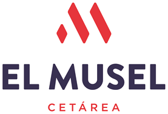

Prototipos de la web nueva
Versión fielMisma estructura y aspecto que la web anterior, con los fallos corregidos: imágenes rotas, erratas y SEO básico.
Versión renovadaMisma identidad con un diseño actual: una sola página, WhatsApp siempre a mano y una sección propia para hostelería.
Prototipo de trabajo. Las fotos del carrusel son recortes de capturas hasta descargar las originales.